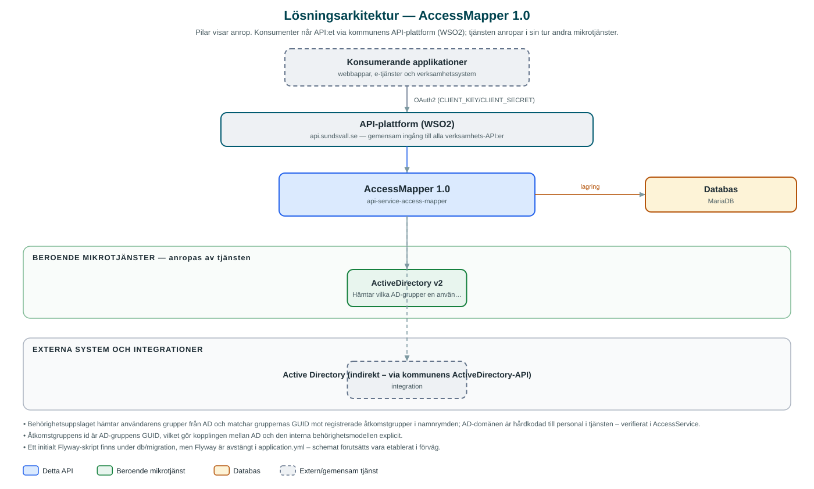

AccessMapper
Översätter en medarbetares Active Directory-grupper till behörigheter i kommunens interna system, utifrån konfigurerbara åtkomstgrupper.
Om API:et
Många av kommunens interna system behöver veta vad en medarbetare får göra – men behörigheterna förvaltas i Active Directory, som systemen inte bör integrera direkt mot. AccessMapper fungerar som brygga: tjänsten slår upp vilka AD-grupper en användare tillhör och översätter dem till åtkomstgrupper med systemspecifika behörigheter.
Kopplingen mellan AD-grupper och behörigheter konfigureras via API:et. En åtkomstgrupp registreras per kommun och namnrymd (namespace) med AD-gruppens id som nyckel och innehåller en eller flera åtkomsttyper, var och en med behörighetsposter som anger nivå och mönster. På så sätt kan olika verksamhetssystem ha sina egna behörighetsmodeller i egna namnrymder, medan grunddatat hämtas från samma AD.
När ett system frågar efter en användares behörigheter hämtar tjänsten användarens AD-grupper, matchar dem mot de registrerade åtkomstgrupperna i den aktuella namnrymden och returnerar de behörigheter som är kopplade – med möjlighet att filtrera på åtkomsttyp.
Det här gör API:et
- Behörighetsuppslag – Hämtar en användares AD-grupper och returnerar de åtkomstgrupper med behörigheter som matchar i den aktuella namnrymden, med filtrering på åtkomsttyp.
- Åtkomstgrupper – Registrerar, uppdaterar, listar och tar bort åtkomstgrupper som kopplar en AD-grupp till behörigheter.
- Namnrymder – Behörighetskonfigurationen hålls isär per kommun och namnrymd, så att olika system kan ha egna behörighetsmodeller.
- Åtkomsttyper och nivåer – Varje åtkomstgrupp innehåller åtkomsttyper med behörighetsposter (nivå och mönster) som beskriver vad gruppen ger rätt till.
API-dokumentation
API:ets samtliga resurser, parametrar och datamodeller finns beskrivna i en OpenAPI-specifikation som är hämtad ur källkodsförrådet. Den kan utforskas interaktivt i Swagger UI eller laddas ner som YAML. Programvaruförteckningen (SBOM) listar tjänstens samtliga tredjepartskomponenter med version och licens.
Teknisk dokumentation
Nedan beskrivs hur tjänsten är uppbyggd, vilka andra tjänster den anropar och vad som krävs för att driftsätta den. Informationen är härledd ur källkoden och dess konfiguration på GitHub.
Arkitektur

API:et är en mikrotjänst (Java 25, Spring Boot via kommunens gemensamma tjänsteplattform dept44 (8.0.8), byggd med Maven). Konsumenter når tjänsten via kommunens gemensamma API-plattform (WSO2) på api.sundsvall.se – tjänsten anropas aldrig direkt. Tjänsten anropar i sin tur andra mikrotjänster i kommunens tjänstelandskap. Lagring: MariaDB; lagrar åtkomstgrupper med åtkomsttyper och behörighetsposter per kommun och namnrymd. Övriga integrationer som förekommer i koden: Active Directory (indirekt – via kommunens ActiveDirectory-API).
Teknikstack
- Språk: Java 25
- Ramverk: Spring Boot via kommunens gemensamma tjänsteplattform dept44 (8.0.8), byggd med Maven
- Databas: MariaDB; lagrar åtkomstgrupper med åtkomsttyper och behörighetsposter per kommun och namnrymd
- Övrigt: Feign-klient genererad ur ActiveDirectory-specifikationen (openapi-generator), JPA med Specification-baserad filtrering, Resilience4j (circuit breaker mot ActiveDirectory)
Beroenden till andra mikrotjänster
Tjänsten anropar följande mikrotjänster. Versionerna är hämtade ur källkodens integrationsklienter.
| Tjänst | Version | Användning |
|---|---|---|
| ActiveDirectory | v2 | Hämtar vilka AD-grupper en användare tillhör. |
Programvaruförteckning
Tjänsten bygger på 255 tredjepartskomponenter fördelade på 14 olika licenser. Till skillnad från tabellen ovan, som listar andra mikrotjänster, avses här de programbibliotek som ingår i bygget. Se programvaruförteckningen för hela listan.
Konfiguration och driftsättning
- application.yml med URL och OAuth2-klientuppgifter för ActiveDirectory-integrationen
- MariaDB-anslutning; initialt schema finns som SQL-skript i repot (Flyway är avstängt i standardkonfigurationen)
- Anrop görs per kommun och namnrymd – municipalityId och namespace ingår i API-vägarna
Noterbart ur källkoden
- Behörighetsuppslaget hämtar användarens grupper från AD och matchar gruppernas GUID mot registrerade åtkomstgrupper i namnrymden; AD-domänen är hårdkodad till personal i tjänsten – verifierat i AccessService.
- Åtkomstgruppens id är AD-gruppens GUID, vilket gör kopplingen mellan AD och den interna behörighetsmodellen explicit.
- Ett initialt Flyway-skript finns under db/migration, men Flyway är avstängt i application.yml – schemat förutsätts vara etablerat i förväg.
- Inparametrar saneras innan de skrivs till loggar och felmeddelanden (sanitizeForLogging) – verifierat i AccessGroupService.
Källkod
Källkoden är öppen och finns hos Sundsvalls kommun på GitHub. I källkodsförrådet finns även instruktioner för att klona, konfigurera och starta tjänsten i egen miljö.